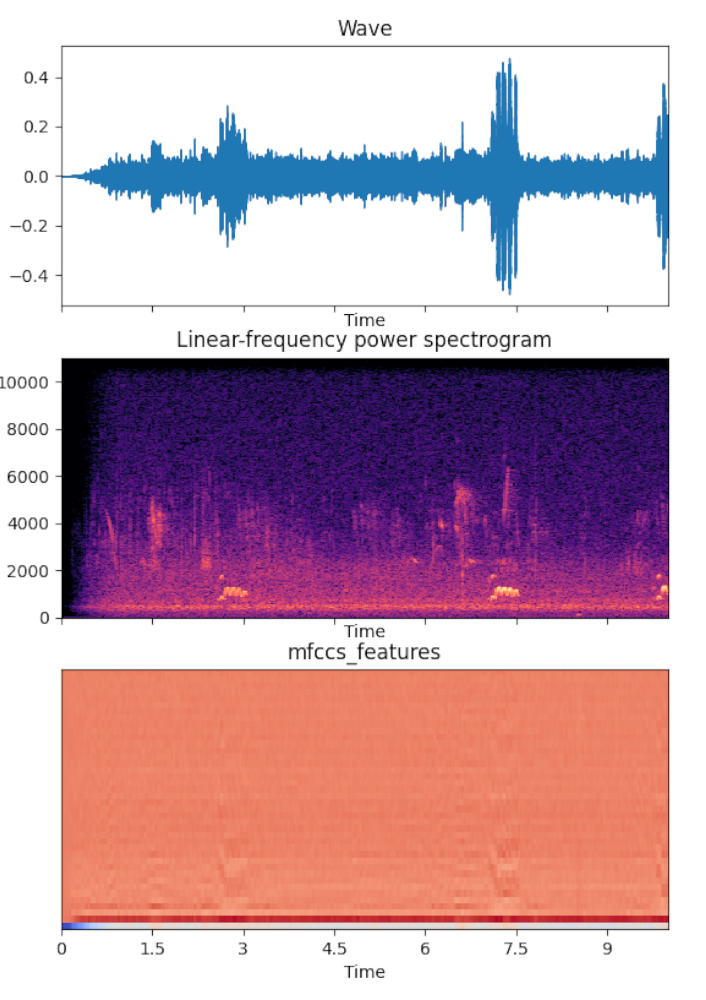

Birds
This ML model learns to differentiate between bird species by means of mp3 recordings of the voices.
The dataset are downloded from the website https://xeno-canto.org/.
Find it here on GitHub.

This ML model learns to differentiate between bird species by means of mp3 recordings of the voices.
The dataset are downloded from the website https://xeno-canto.org/.
Find it here on GitHub.

It’s a CNN demonstrating how to identify cats and dogs on different pictures. The data itself were to big to upload on github.
Helper includes different python files for specific deep learning scenarios like sound or picture categorization with helper functions youz often needs. It also includes a general helper file which you can use in nearly every project.
It’s a Regression model demonstrating how to predict the survival on the Titanic desaster.
It’s a NLP Model demonstrating how to categorize MovieReviews in different ways.